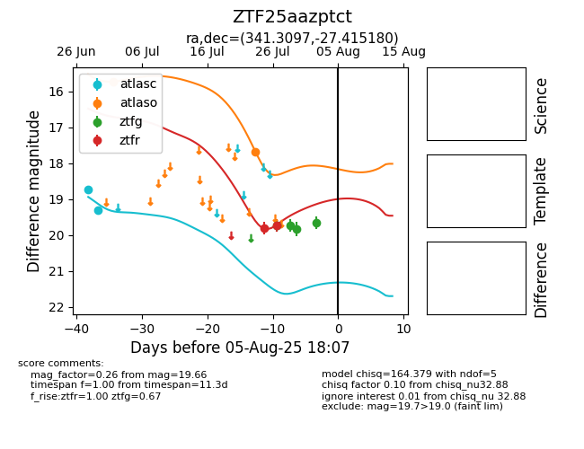

Target ZTF25aazptct at 2025-08-05 18:07, see:
FINK: fink-portal.org/ZTF25aazptct
Lasair: lasair-ztf.lsst.ac.uk/objects/ZTF25aazptct
ALeRCE: alerce.online/object/ZTF25aazptct
alt names
ZTF25aazptct (ztf,fink)
coordinates:
equatorial (ra, dec) = (341.3097,-27.41518)
galactic (l, b) = (24.9850,-62.03189)
photometry
last atlasc=19.31, atlaso=17.67, ztfg=19.66, ztfr=19.72
2 atlasc, 2 atlaso, 4 ztfg, 2 ztfr detections
